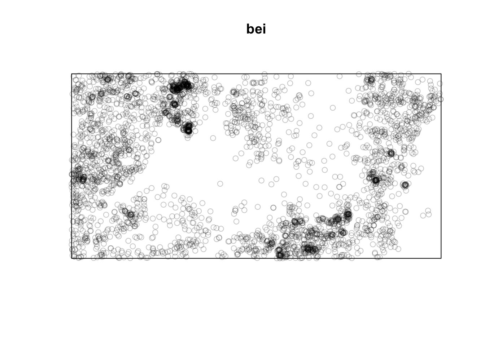

Tuesday August 30, 2022
“Feeling a little uncomfortable with your skills is a sign of learning, and continuous learning is what the tech industry thrives on!” — Vanessa Hurst
Today
- Working with data frames
- Working with data frames using functions from the {dplyr} package
Working with data frames
Consider the data frame studentdata from the {LearnBayes} package. To access this data frame, you first install the package with the install.packages() function. You put the name of the package {LearnBayes} in quotes (single or double). Then to make the functions from the package available to your current session use the library() function with the name of the package (unquoted) inside the parentheses.
if(!require(LearnBayes)) install.packages(pkgs = "LearnBayes", repos = "http://cran.us.r-project.org")## Loading required package: LearnBayeslibrary(LearnBayes)Note: The argument repos = in the install.packages() function directs where the package can be obtained on CRAN (comprehensive R archive network). The CRAN repository is set automatically when using RStudio and you can install packages by clicking on Packages > Install in the lower-right panel.
For interactive use you need to specify the repository and when you use the Knit button you don’t want to install packages that already exist on your computer so you add the conditional if() function that says “only install the package IF it is not (!) available.”
Make a copy of the data frame by assigning it to an object with the name df and print the first six rows using the head() function.
df <- studentdata
head(df)## Student Height Gender Shoes Number Dvds ToSleep WakeUp Haircut Job Drink
## 1 1 67 female 10 5 10 -2.5 5.5 60 30.0 water
## 2 2 64 female 20 7 5 1.5 8.0 0 20.0 pop
## 3 3 61 female 12 2 6 -1.5 7.5 48 0.0 milk
## 4 4 61 female 3 6 40 2.0 8.5 10 0.0 water
## 5 5 70 male 4 5 6 0.0 9.0 15 17.5 pop
## 6 6 63 female NA 3 5 1.0 8.5 25 0.0 waterData frames are like spreadsheets with rows and columns. The rows are the observations (here each row is a student in an intro stats class at Bowling Green State University) and the columns are the variables. Here the variables are answers to questions like what is your height, choose a number between 1 and 10, what time did you go to bed last night, etc.
The names of the columns are printed using the names() function.
names(df)## [1] "Student" "Height" "Gender" "Shoes" "Number" "Dvds" "ToSleep"
## [8] "WakeUp" "Haircut" "Job" "Drink"All columns are of the same length, but not all students answered all questions so some of the data frame cells contain the missing-value indicator NA.
Data values in a data frame are stored in rows and columns and are accessed with bracket notation [row, column] where row is the row number and column is the column number like a matrix.
For example here you specify the data value in the 10th row and 2nd column (Height column) of the df data frame.
df[10, 2]## [1] 65By specifying only the row index and leaving the column index blank you get all values in that row which corresponds to all the responses given by the 10th student.
df[10, ]## Student Height Gender Shoes Number Dvds ToSleep WakeUp Haircut Job Drink
## 10 10 65 male 10 7 22 2.5 8.5 12 0 milkDrink preference was one of the questions. Responses across all students are available in the column labeled Drink as a vector of character values. You list all the different drink preferences by typing
df$Drink## [1] water pop milk water pop water water pop water milk milk water
## [13] pop milk pop water water pop water water water water water milk
## [25] pop water water pop water water water water pop water water water
## [37] pop milk pop water water water pop milk water water water pop
## [49] pop water milk pop pop water water pop milk pop pop water
## [61] water water water water water milk pop pop pop water water water
## [73] pop water pop pop water pop pop milk water pop water water
## [85] milk pop water water pop water water water milk water pop water
## [97] pop pop pop water water pop water pop milk milk water water
## [109] water water water pop water milk milk milk water milk pop water
## [121] pop pop pop pop water water water water water water milk water
## [133] pop milk water water water water water <NA> pop water water pop
## [145] milk milk water water pop water water water pop water <NA> water
## [157] water water water water milk milk water milk water water milk water
## [169] pop pop pop water pop pop water water milk milk water water
## [181] water pop pop water water pop pop water water milk water water
## [193] milk <NA> water pop milk pop milk water water water water water
## [205] water pop pop water milk water milk water milk water milk water
## [217] milk water pop water water milk water water pop milk milk water
## [229] milk water pop pop pop water water milk pop milk water milk
## [241] water water pop water water water pop pop water water pop water
## [253] water milk water pop water pop milk milk pop pop water water
## [265] water pop pop milk water water water water milk milk water water
## [277] milk milk milk pop water water <NA> water water water pop milk
## [289] water water pop water water milk pop milk milk water water water
## [301] pop water water <NA> water water water water water pop water water
## [313] water water pop water water water milk milk pop water water water
## [325] water water pop pop milk milk water water pop pop pop pop
## [337] water milk water water pop milk pop water water water pop water
## [349] water water water water water <NA> pop pop water milk water water
## [361] milk water water pop water water water water water water pop water
## [373] water milk water water milk milk milk water water water water pop
## [385] water water pop water pop milk pop water water <NA> water water
## [397] water water milk water pop milk water water water water water milk
## [409] pop pop pop water pop milk water water milk milk pop water
## [421] milk water pop milk water water water water pop water pop pop
## [433] pop milk pop water milk pop water pop pop pop water water
## [445] water water water water pop milk water water water pop milk milk
## [457] pop pop water water milk water milk pop water water water water
## [469] pop water milk water water water water water milk milk water water
## [481] pop water water milk water milk water pop pop water water pop
## [493] pop pop milk water water pop water water water water pop water
## [505] pop milk water <NA> milk water pop water water milk water water
## [517] water water water milk water water pop water pop water milk milk
## [529] milk milk pop water pop milk <NA> milk pop water water pop
## [541] milk pop water milk water pop water pop water pop water water
## [553] pop milk water water water water <NA> water water pop pop milk
## [565] water milk pop pop water water water pop pop pop pop water
## [577] water water water water pop pop water pop water water water water
## [589] milk water water water water pop pop water water water water water
## [601] water water pop water water <NA> milk pop water water water pop
## [613] water pop water pop water water pop pop water pop water milk
## [625] water pop pop pop water milk pop water pop water water milk
## [637] water water water water water water water pop pop pop pop water
## [649] pop water milk water water pop pop pop water
## Levels: milk pop waterSome students left that response blank and therefore the response is coded with the missing-value indicator.
The variable type depends on the question asked. For example, answers given to the question of student height result in a numeric variable, answers given to the question about drink preference result in a character (or factor) variable.
For integer, character, and factor variables we summarize the set of responses with the table() function.
table(df$Drink)##
## milk pop water
## 113 178 355There are 113 students who prefer milk, 178 prefer soda, and 355 prefer water.
We use the plot() method to make a draft plot of this table.
plot(x = df$Drink)
Notice that the sum of the responses is 646, which is less than the total number of students (657).
Students who left that question blank are ignored in the table() function. To include the missing values you add the argument useNA = "ifany" to the table() function.
table(df$Drink,
useNA = "ifany")##
## milk pop water <NA>
## 113 178 355 11Note: When you want code executed directly within the text you separate the code using single back ticks. This is useful when you write reports that need periodic updates when new data becomes available. Instead if you hard code the values in the text then you need to search the document for these values during each update.
Suppose you are interested in examining how long students reported sleeping. This was not asked directly. You compute it from the ToSleep and WakeUp times columns. You assign the result of the difference to a column we call SleepHrs.
df$SleepHrs <- df$WakeUp - df$ToSleep
head(df)## Student Height Gender Shoes Number Dvds ToSleep WakeUp Haircut Job Drink
## 1 1 67 female 10 5 10 -2.5 5.5 60 30.0 water
## 2 2 64 female 20 7 5 1.5 8.0 0 20.0 pop
## 3 3 61 female 12 2 6 -1.5 7.5 48 0.0 milk
## 4 4 61 female 3 6 40 2.0 8.5 10 0.0 water
## 5 5 70 male 4 5 6 0.0 9.0 15 17.5 pop
## 6 6 63 female NA 3 5 1.0 8.5 25 0.0 water
## SleepHrs
## 1 8.0
## 2 6.5
## 3 9.0
## 4 6.5
## 5 9.0
## 6 7.5Now you have a new numeric variable in the data frame called SleepHrs.
You can’t table numeric variables, but the summary() method prints a set of summary statistics for the set of values.
summary(df$SleepHrs)## Min. 1st Qu. Median Mean 3rd Qu. Max. NA's
## 2.500 6.500 7.500 7.385 8.500 12.500 4The average number of hours slept is 7.4 with a maximum of 12.5 and a minimum of 2.5. There are four students that did not answer either when they went to sleep or when they woke up questions.
You use the hist() function to construct a histogram of sleep hours.
hist(x = df$SleepHrs)
The histogram function divides the number of sleep hours into one-hour bins and counts the number of students whose reported sleep hours falls into each bin. For example based on when they said they went to sleep and when the said they woke up, about 100 students slept between five and six hours the night before the survey.
Since the gender of each student is reported, you can make comparisons between those who identify as male and those who identify as female. For instance, do men sleep more than women? You can answer this question graphically with box plots using the plot() method. You specify the character variable on the horizontal axis (x) to be gender with the x = argument and the numeric variable on the vertical axis (y) with the y = argument.
plot(x = df$Gender,
y = df$SleepHrs)
The plot reveals little difference in the amount of sleep.
Repeat for hair cut prices.
plot(x = df$Gender,
y = df$Haircut)
Big difference.
Finally, is the amount of sleep for a student related to when they go to bed? If you place numeric variables on the x and y axes then you get a scatter plot.
plot(x = df$ToSleep,
y = df$SleepHrs)
The ToSleep variable is centered on midnight so that -2 means a student went to sleep at 10p.
You describe the decreasing relationship with a line through the points. The least-squares line is fit using the lm() function and the line is drawn on the existing plot with the abline() function applied to the linear regression object model.
model <- lm(SleepHrs ~ ToSleep,
data = df)
plot(x = df$ToSleep,
y = df$SleepHrs)
abline(model)
Tornadoes
Most of the time you will start by getting your data stored in a file into R. Secondary source data should be imported directly from repositories on the Web. When there is no API (application programming interface) to the repository, you need to first download the data.
For example, consider the regularly updated reports of tornadoes in the United States. The data repository is the Storm Prediction Center (SPC) https://www.spc.noaa.gov/wcm/index.html#data.
Here you are interested in the file called 1950-2020_actual_tornadoes.csv. First you download the file from the site with the download.file() function specifying the location (url =) and a name you want the file to be called on your computer (destfile =).
download.file(url = "http://www.spc.noaa.gov/wcm/data/1950-2019_actual_tornadoes.csv",
destfile = "data/Tornadoes.csv")A file called Tornadoes.csv should now be located in the directory data. Click on the Files tab in the lower-right panel, then select the data folder.
Next you read (import) the file as a data frame using the readr::read_csv() function from the {tidyverse} group of packages.
if(!require(tidyverse)) install.packages(pkgs = "tidyverse", repos = "http://cran.us.r-project.org")## Loading required package: tidyverse## ── Attaching packages ─────────────────────────────────────── tidyverse 1.3.1 ──## ✓ ggplot2 3.3.5 ✓ purrr 0.3.4
## ✓ tibble 3.1.6 ✓ dplyr 1.0.8
## ✓ tidyr 1.1.4 ✓ stringr 1.4.0
## ✓ readr 2.1.2 ✓ forcats 0.5.1## ── Conflicts ────────────────────────────────────────── tidyverse_conflicts() ──
## x dplyr::filter() masks stats::filter()
## x dplyr::lag() masks stats::lag()Torn.df <- readr::read_csv(file = here::here("data", "Tornadoes.csv"))## Rows: 65162 Columns: 29## ── Column specification ────────────────────────────────────────────────────────
## Delimiter: ","
## chr (4): mo, dy, st, stf
## dbl (23): om, yr, tz, stn, mag, inj, fat, loss, closs, slat, slon, elat, el...
## date (1): date
## time (1): time
##
## ℹ Use `spec()` to retrieve the full column specification for this data.
## ℹ Specify the column types or set `show_col_types = FALSE` to quiet this message.We preview the data frame using the head() function.
head(Torn.df)## # A tibble: 6 × 29
## om yr mo dy date time tz st stf stn mag inj
## <dbl> <dbl> <chr> <chr> <date> <time> <dbl> <chr> <chr> <dbl> <dbl> <dbl>
## 1 1 1950 01 03 1950-01-03 11:00 3 MO 29 1 3 3
## 2 2 1950 01 03 1950-01-03 11:55 3 IL 17 2 3 3
## 3 3 1950 01 03 1950-01-03 16:00 3 OH 39 1 1 1
## 4 4 1950 01 13 1950-01-13 05:25 3 AR 5 1 3 1
## 5 5 1950 01 25 1950-01-25 19:30 3 MO 29 2 2 5
## 6 6 1950 01 25 1950-01-25 21:00 3 IL 17 3 2 0
## # … with 17 more variables: fat <dbl>, loss <dbl>, closs <dbl>, slat <dbl>,
## # slon <dbl>, elat <dbl>, elon <dbl>, len <dbl>, wid <dbl>, ns <dbl>,
## # sn <dbl>, sg <dbl>, f1 <dbl>, f2 <dbl>, f3 <dbl>, f4 <dbl>, fc <dbl>Each row is a unique tornado report. Observations for each report include the day and time, the state (st), the maximum EF rating (mag), the number of injuries (inj), the number of fatalities (fat), estimated property losses (loss), estimated crop losses (closs), start and end locations in decimal degrees longitude and latitude, length of the damage path in miles (len), width of the damage in yards (wid).
The total number of tornado reports in the data set is returned using the nrow() function.
nrow(Torn.df)## [1] 65162To create a subset of the data frame that contains only tornadoes in years (yr) since 2001, you include the logical operator yr >= 2001 inside the subset operator. The logical operator is placed in front of the comma since you want all rows where the result of the operator returns a value TRUE.
Torn2.df <- Torn.df[Torn.df$yr >= 2001, ]You see that there are fewer rows (tornado reports) in this new data frame assigned the object name Torn2.df.
You subset again, keeping only tornadoes with EF ratings (mag variable) greater than zero. Here you recycle the name Torn2.df.
Torn2.df <- Torn2.df[Torn2.df$mag > 0, ]Now you compute the correlation between EF rating (mag) and path length (len) with the cor() function. The first argument is the vector of EF ratings and the second argument is the vector of path lengths.
cor(Torn2.df$mag, Torn2.df$len)## [1] 0.4857969Path length is recorded in miles and path width in yards and the EF damage rating variable mag is numeric. To convert path length to kilometers, path width to meters, and the EF rating to a factor and then adding these changes as new columns, type
Torn2.df$Length <- Torn2.df$len * 1609.34
Torn2.df$Width <- Torn2.df$wid * .9144
Torn2.df$EF <- factor(Torn2.df$mag)Create side-by-side box plots of path length (in kilometers) by EF rating.
plot(x = Torn2.df$EF,
y = Torn2.df$Length/1000)
Hurricane data
Here you import the data directly from the Web by specifying the URL as a character string using the file = argument.
loc <- "http://myweb.fsu.edu/jelsner/temp/data/US.txt"
USHur.df <- readr::read_table(file = loc)##
## ── Column specification ────────────────────────────────────────────────────────
## cols(
## Year = col_double(),
## All = col_double(),
## MUS = col_double(),
## G = col_double(),
## FL = col_double(),
## E = col_double()
## )The dim() function returns the size of the data frame defined as the number of rows and the number of columns.
dim(USHur.df)## [1] 166 6There are 166 rows and 6 columns in the data frame. Each row is a year and the columns include Year, number of hurricanes (All), number of major hurricanes (MUS), number of Gulf coast hurricanes (G), number of Florida hurricanes (FL), and number of East coast hurricanes (E) in that order.
To get a glimpse of the data values you list the first six lines of the data frame using the head() function.
head(USHur.df)## # A tibble: 6 × 6
## Year All MUS G FL E
## <dbl> <dbl> <dbl> <dbl> <dbl> <dbl>
## 1 1851 1 1 0 1 0
## 2 1852 3 1 1 2 0
## 3 1853 0 0 0 0 0
## 4 1854 2 1 1 0 1
## 5 1855 1 1 1 0 0
## 6 1856 2 1 1 1 0The distribution of Florida hurricane counts by year is obtained using the table() function and specifying the FL column with df$FL.
table(USHur.df$FL)##
## 0 1 2 3 4
## 93 43 24 5 1There are 93 years without a FL hurricane, 43 years with exactly one hurricane, 24 years with two hurricanes, and so on.
Rainfall data
The data are monthly statewide average rainfall (in inches) for Florida starting in 1895 from http://www.esrl.noaa.gov/psd/data/timeseries/. Note: I put values into a text editor and then uploaded the file to the Web at location http://myweb.fsu.edu/jelsner/temp/data/FLprecip.txt.
To import the data you use the readr::read_table() function and assign the object the name FLp.df. You type the name of the object to see that it is a tabled data frame (tibble) with 117 rows and 13 columns.
loc <- "http://myweb.fsu.edu/jelsner/temp/data/FLprecip.txt"
FLp.df <- read_table(file = loc)##
## ── Column specification ────────────────────────────────────────────────────────
## cols(
## Year = col_double(),
## Jan = col_double(),
## Feb = col_double(),
## Mar = col_double(),
## Apr = col_double(),
## May = col_double(),
## Jun = col_double(),
## Jul = col_double(),
## Aug = col_double(),
## Sep = col_double(),
## Oct = col_double(),
## Nov = col_double(),
## Dec = col_double()
## )FLp.df## # A tibble: 117 × 13
## Year Jan Feb Mar Apr May Jun Jul Aug Sep Oct Nov Dec
## <dbl> <dbl> <dbl> <dbl> <dbl> <dbl> <dbl> <dbl> <dbl> <dbl> <dbl> <dbl> <dbl>
## 1 1895 3.28 3.24 2.50 4.53 4.25 4.5 7.45 6.10 4.67 3.09 2.65 1.59
## 2 1896 3.93 3.02 2.57 0.498 2.7 11.2 8.22 5.89 4.35 2.96 3.52 2.07
## 3 1897 1.84 6 2.12 4.39 2.28 5.22 7.21 6.83 11.1 4.10 1.75 2.68
## 4 1898 0.704 2.01 1.26 1.32 1.51 3.29 8.95 13.1 5.23 5.88 2.19 3.89
## 5 1899 4.52 5.92 1.90 3.40 1.11 5.80 9.26 6.71 5.13 5.88 0.751 1.94
## 6 1900 3.21 4.37 6.8 4.32 3.89 9.99 7.50 4.49 4.93 5.23 1.22 4.29
## 7 1901 2.34 4.21 5.37 2.14 4.15 10.4 6.42 10.9 8.33 1.71 0.841 2.49
## 8 1902 0.633 4.81 4.29 1.38 2.36 6.22 5.24 4.80 9.54 5.21 3.02 3.52
## 9 1903 5.06 5.58 5.45 0.429 4.74 7.01 6.63 6.96 7.47 1.75 2.7 1.70
## 10 1904 4.96 3.02 1.59 1.66 2.49 6.59 6.27 7.53 4.5 4.41 2.87 1.84
## # … with 107 more rowsThe first column is the year and the next 12 columns are the months.
What was the statewide rainfall during June of 1900?
FLp.df$Year == 1900## [1] FALSE FALSE FALSE FALSE FALSE TRUE FALSE FALSE FALSE FALSE FALSE FALSE
## [13] FALSE FALSE FALSE FALSE FALSE FALSE FALSE FALSE FALSE FALSE FALSE FALSE
## [25] FALSE FALSE FALSE FALSE FALSE FALSE FALSE FALSE FALSE FALSE FALSE FALSE
## [37] FALSE FALSE FALSE FALSE FALSE FALSE FALSE FALSE FALSE FALSE FALSE FALSE
## [49] FALSE FALSE FALSE FALSE FALSE FALSE FALSE FALSE FALSE FALSE FALSE FALSE
## [61] FALSE FALSE FALSE FALSE FALSE FALSE FALSE FALSE FALSE FALSE FALSE FALSE
## [73] FALSE FALSE FALSE FALSE FALSE FALSE FALSE FALSE FALSE FALSE FALSE FALSE
## [85] FALSE FALSE FALSE FALSE FALSE FALSE FALSE FALSE FALSE FALSE FALSE FALSE
## [97] FALSE FALSE FALSE FALSE FALSE FALSE FALSE FALSE FALSE FALSE FALSE FALSE
## [109] FALSE FALSE FALSE FALSE FALSE FALSE FALSE FALSE FALSEFLp.df$Jun[FLp.df$Year == 1900]## [1] 9.993What year had the wettest March?
FLp.df$Mar## [1] 2.499 2.570 2.125 1.259 1.898 6.800 5.370 4.291 5.451 1.591 3.849 3.191
## [13] 0.562 0.779 2.792 1.899 2.180 3.932 5.553 1.528 2.598 0.889 2.027 2.497
## [25] 5.409 1.388 1.981 2.422 2.181 5.969 1.858 4.329 2.400 4.392 3.374 7.449
## [37] 5.312 3.659 3.898 3.363 0.960 3.103 4.257 1.764 1.407 3.515 3.918 6.123
## [49] 4.441 5.685 0.637 4.152 7.133 6.822 2.043 4.018 3.293 3.852 3.090 2.404
## [61] 1.643 1.325 4.601 6.416 8.701 6.357 2.489 3.808 1.707 3.237 4.042 1.826
## [73] 1.193 1.569 5.991 8.388 2.142 4.494 5.516 2.525 2.353 2.553 2.002 4.226
## [85] 2.143 5.043 3.176 5.379 7.213 4.710 2.537 4.297 8.443 5.101 3.349 2.672
## [97] 7.097 3.299 5.097 3.839 3.395 7.575 2.754 6.042 1.790 3.207 6.824 2.700
## [109] 6.642 0.994 6.027 0.496 1.213 3.568 2.662 5.995 4.063max(FLp.df$Mar)## [1] 8.701which.max(FLp.df$Mar)## [1] 65FLp.df$Year[which.max(FLp.df$Mar)]## [1] 1959What month during 1965 was the wettest? How wet was it?
FLp.df$Year == 1965## [1] FALSE FALSE FALSE FALSE FALSE FALSE FALSE FALSE FALSE FALSE FALSE FALSE
## [13] FALSE FALSE FALSE FALSE FALSE FALSE FALSE FALSE FALSE FALSE FALSE FALSE
## [25] FALSE FALSE FALSE FALSE FALSE FALSE FALSE FALSE FALSE FALSE FALSE FALSE
## [37] FALSE FALSE FALSE FALSE FALSE FALSE FALSE FALSE FALSE FALSE FALSE FALSE
## [49] FALSE FALSE FALSE FALSE FALSE FALSE FALSE FALSE FALSE FALSE FALSE FALSE
## [61] FALSE FALSE FALSE FALSE FALSE FALSE FALSE FALSE FALSE FALSE TRUE FALSE
## [73] FALSE FALSE FALSE FALSE FALSE FALSE FALSE FALSE FALSE FALSE FALSE FALSE
## [85] FALSE FALSE FALSE FALSE FALSE FALSE FALSE FALSE FALSE FALSE FALSE FALSE
## [97] FALSE FALSE FALSE FALSE FALSE FALSE FALSE FALSE FALSE FALSE FALSE FALSE
## [109] FALSE FALSE FALSE FALSE FALSE FALSE FALSE FALSE FALSEFLp.df[FLp.df$Year == 1965, ]## # A tibble: 1 × 13
## Year Jan Feb Mar Apr May Jun Jul Aug Sep Oct Nov Dec
## <dbl> <dbl> <dbl> <dbl> <dbl> <dbl> <dbl> <dbl> <dbl> <dbl> <dbl> <dbl> <dbl>
## 1 1965 1.80 4.58 4.04 2.54 1.08 10.0 8.54 7.14 6.69 4.66 1.58 2.76which.max(FLp.df[FLp.df$Year == 1965, 2:12])## Jun
## 6which.max(FLp.df[FLp.df$Year == 1965, 2:12])## Jun
## 6max(FLp.df[FLp.df$Year == 1965, 2:12])## [1] 10.032Working with data frames using functions from the {dplyr} package
The functions in the {dplyr} package simplify working with data frames. The functions work only on data frames.
The function names are English language verbs so they are easy to remember. The verbs help you to translate your thoughts into code.
We consider the verbs one at a time using the airquality data frame. The data frame contains air quality measurements taken in New York City between May and September 1973. (?airquality).
dim(airquality)## [1] 153 6head(airquality)## Ozone Solar.R Wind Temp Month Day
## 1 41 190 7.4 67 5 1
## 2 36 118 8.0 72 5 2
## 3 12 149 12.6 74 5 3
## 4 18 313 11.5 62 5 4
## 5 NA NA 14.3 56 5 5
## 6 28 NA 14.9 66 5 6The columns include Ozone (ozone concentration in ppb), Solar.R (solar radiation in langleys), Wind (wind speed in mph), Temp (air temperature in degrees F), Month, and Day.
We get summary statistics on the values in each column with the summary() method.
summary(airquality)## Ozone Solar.R Wind Temp
## Min. : 1.00 Min. : 7.0 Min. : 1.700 Min. :56.00
## 1st Qu.: 18.00 1st Qu.:115.8 1st Qu.: 7.400 1st Qu.:72.00
## Median : 31.50 Median :205.0 Median : 9.700 Median :79.00
## Mean : 42.13 Mean :185.9 Mean : 9.958 Mean :77.88
## 3rd Qu.: 63.25 3rd Qu.:258.8 3rd Qu.:11.500 3rd Qu.:85.00
## Max. :168.00 Max. :334.0 Max. :20.700 Max. :97.00
## NA's :37 NA's :7
## Month Day
## Min. :5.000 Min. : 1.0
## 1st Qu.:6.000 1st Qu.: 8.0
## Median :7.000 Median :16.0
## Mean :6.993 Mean :15.8
## 3rd Qu.:8.000 3rd Qu.:23.0
## Max. :9.000 Max. :31.0
## Note that columns that have missing values are tabulated. For example, there are 37 missing ozone measurements and 7 missing radiation measurements.
Importantly for making your code more human readable you can apply the summary() function on the airquality data frame using the pipe operator (|>).
airquality |> summary()## Ozone Solar.R Wind Temp
## Min. : 1.00 Min. : 7.0 Min. : 1.700 Min. :56.00
## 1st Qu.: 18.00 1st Qu.:115.8 1st Qu.: 7.400 1st Qu.:72.00
## Median : 31.50 Median :205.0 Median : 9.700 Median :79.00
## Mean : 42.13 Mean :185.9 Mean : 9.958 Mean :77.88
## 3rd Qu.: 63.25 3rd Qu.:258.8 3rd Qu.:11.500 3rd Qu.:85.00
## Max. :168.00 Max. :334.0 Max. :20.700 Max. :97.00
## NA's :37 NA's :7
## Month Day
## Min. :5.000 Min. : 1.0
## 1st Qu.:6.000 1st Qu.: 8.0
## Median :7.000 Median :16.0
## Mean :6.993 Mean :15.8
## 3rd Qu.:8.000 3rd Qu.:23.0
## Max. :9.000 Max. :31.0
## You read the pipe as THEN. “take the airquality data frame THEN summarize the columns.”
The pipe operator allows you to string together functions that when read by a human makes it easy to understand what is being done.
Hypothetically, suppose the object of interest is called me and there was a function called wake_up(). I could apply this function called wake_up() in two ways.
wake_up(me) # way number one
me |> wake_up() # way number twoThe second way involves a bit more typing but it is easier to read (the subject comes before the predicate) and thus easier to understand. This becomes clear when stringing together functions.
Continuing with the hypothetical example, what happens to the result of me after the function wake_up() has been applied? I get_out_of_bed() and then get_dressed().
Again, you can apply these functions in two ways.
get_dressed(get_out_of_bed(wake_up(me)))
me |>
wake_up() |>
get_out_of_bed() |>
get_dressed()The order of the functions usually matters to the outcome.
Note that I format the code to make it easy to read. Each line is gets only one verb and each line ends with the pipe (except the last one).
Continuing…
me |>
wake_up() |>
get_out_of_bed() |>
get_dressed() |>
make_coffee() |>
drink_coffee() |>
leave_house()Which is much better in terms of ‘readability’ then leave_house(drink_coffee(make_coffee(get_dressed(get_out_of_bed(wake_up(me)))))).
Tibbles are data frames that make life a little easier. R is an old language, and some things that were useful 10 or 20 years ago now get in your way. To make a data frame a tibble (tabular data frame) use the as_tibble() function.
class(airquality)## [1] "data.frame"airquality <- as_tibble(airquality)
class(airquality)## [1] "tbl_df" "tbl" "data.frame"Click on airquality in the environment. It is a data frame. We use the terms ‘tibble’ and ‘data frame’ interchangeably in this class.
Now we are ready to look at some of the commonly used verbs and to see how to apply them to a data frame.
The function select() chooses variables by name. For example, choose the month (Month), day (Day), and temperature (Temp) columns.
airquality |>
dplyr::select(Month, Day, Temp)## # A tibble: 153 × 3
## Month Day Temp
## <int> <int> <int>
## 1 5 1 67
## 2 5 2 72
## 3 5 3 74
## 4 5 4 62
## 5 5 5 56
## 6 5 6 66
## 7 5 7 65
## 8 5 8 59
## 9 5 9 61
## 10 5 10 69
## # … with 143 more rowsThe result is a data frame containing only the three columns with column names listed in the select() function.
Suppose you want a new data frame with only the temperature and ozone concentrations. You include an assignment operator (<-) and an object name (here df).
df <- airquality |>
dplyr::select(Temp, Ozone)
df## # A tibble: 153 × 2
## Temp Ozone
## <int> <int>
## 1 67 41
## 2 72 36
## 3 74 12
## 4 62 18
## 5 56 NA
## 6 66 28
## 7 65 23
## 8 59 19
## 9 61 8
## 10 69 NA
## # … with 143 more rowsThe verbs take only data frames as input and return only data frames.
The function filter() chooses observations based on specific values. Suppose we want only the observations where the temperature is at or above 80 F.
airquality |>
dplyr::filter(Temp >= 80)## # A tibble: 73 × 6
## Ozone Solar.R Wind Temp Month Day
## <int> <int> <dbl> <int> <int> <int>
## 1 45 252 14.9 81 5 29
## 2 NA 186 9.2 84 6 4
## 3 NA 220 8.6 85 6 5
## 4 29 127 9.7 82 6 7
## 5 NA 273 6.9 87 6 8
## 6 71 291 13.8 90 6 9
## 7 39 323 11.5 87 6 10
## 8 NA 259 10.9 93 6 11
## 9 NA 250 9.2 92 6 12
## 10 23 148 8 82 6 13
## # … with 63 more rowsThe result is a data frame with the same 6 columns but now only 73 observations. Each of the observations has a temperature of at least 80 F.
Suppose you want a new data frame keeping only observations when temperature is at least 80 F and when winds are less than 5 mph.
df <- airquality |>
dplyr::filter(Temp >= 80 & Wind < 5)
df## # A tibble: 8 × 6
## Ozone Solar.R Wind Temp Month Day
## <int> <int> <dbl> <int> <int> <int>
## 1 135 269 4.1 84 7 1
## 2 64 175 4.6 83 7 5
## 3 66 NA 4.6 87 8 6
## 4 122 255 4 89 8 7
## 5 168 238 3.4 81 8 25
## 6 118 225 2.3 94 8 29
## 7 73 183 2.8 93 9 3
## 8 91 189 4.6 93 9 4The function arrange() orders the rows by values given in a particular column.
airquality |>
dplyr::arrange(Solar.R)## # A tibble: 153 × 6
## Ozone Solar.R Wind Temp Month Day
## <int> <int> <dbl> <int> <int> <int>
## 1 16 7 6.9 74 7 21
## 2 1 8 9.7 59 5 21
## 3 23 13 12 67 5 28
## 4 23 14 9.2 71 9 22
## 5 8 19 20.1 61 5 9
## 6 14 20 16.6 63 9 25
## 7 9 24 13.8 81 8 2
## 8 9 24 10.9 71 9 14
## 9 4 25 9.7 61 5 23
## 10 13 27 10.3 76 9 18
## # … with 143 more rowsThe ordering is done from the lowest value of radiation to highest value. Here you see the first 10 rows. Note Month and Day are no longer chronological.
Repeat but order by the value of air temperature.
airquality |>
dplyr::arrange(Temp)## # A tibble: 153 × 6
## Ozone Solar.R Wind Temp Month Day
## <int> <int> <dbl> <int> <int> <int>
## 1 NA NA 14.3 56 5 5
## 2 6 78 18.4 57 5 18
## 3 NA 66 16.6 57 5 25
## 4 NA NA 8 57 5 27
## 5 18 65 13.2 58 5 15
## 6 NA 266 14.9 58 5 26
## 7 19 99 13.8 59 5 8
## 8 1 8 9.7 59 5 21
## 9 8 19 20.1 61 5 9
## 10 4 25 9.7 61 5 23
## # … with 143 more rowsImportantly you can string the functions together. For example select the variables radiation, wind, and temperature then filter by temperatures above 90 F and arrange by temperature.
airquality |>
dplyr::select(Solar.R, Wind, Temp) |>
dplyr::filter(Temp > 90) |>
dplyr::arrange(Temp)## # A tibble: 14 × 3
## Solar.R Wind Temp
## <int> <dbl> <int>
## 1 291 14.9 91
## 2 167 6.9 91
## 3 250 9.2 92
## 4 267 6.3 92
## 5 272 5.7 92
## 6 222 8.6 92
## 7 197 5.1 92
## 8 259 10.9 93
## 9 183 2.8 93
## 10 189 4.6 93
## 11 225 2.3 94
## 12 188 6.3 94
## 13 237 6.3 96
## 14 203 9.7 97The result is a data frame with three columns and 14 rows arranged by increasing temperatures above 90 F.
The mutate() function adds new columns to the data frame. For example, create a new column called TempC as the temperature in degrees Celsius. Also create a column called WindMS as the wind speed in meters per second.
airquality |>
dplyr::mutate(TempC = (Temp - 32) * 5/9,
WindMS = Wind * .44704) ## # A tibble: 153 × 8
## Ozone Solar.R Wind Temp Month Day TempC WindMS
## <int> <int> <dbl> <int> <int> <int> <dbl> <dbl>
## 1 41 190 7.4 67 5 1 19.4 3.31
## 2 36 118 8 72 5 2 22.2 3.58
## 3 12 149 12.6 74 5 3 23.3 5.63
## 4 18 313 11.5 62 5 4 16.7 5.14
## 5 NA NA 14.3 56 5 5 13.3 6.39
## 6 28 NA 14.9 66 5 6 18.9 6.66
## 7 23 299 8.6 65 5 7 18.3 3.84
## 8 19 99 13.8 59 5 8 15 6.17
## 9 8 19 20.1 61 5 9 16.1 8.99
## 10 NA 194 8.6 69 5 10 20.6 3.84
## # … with 143 more rowsThe resulting data frame has 8 columns (two new ones) labeled TempC and WindMS.
On days when the temperature is below 60 F add a column giving the apparent temperature based on the cooling effect of the wind (wind chill) and then arrange from coldest to warmest apparent temperature.
airquality |>
dplyr::filter(Temp < 60) |>
dplyr::mutate(TempAp = 35.74 + .6215 * Temp - 35.75 * Wind^.16 + .4275 * Temp * Wind^.16) |>
dplyr::arrange(TempAp)## # A tibble: 8 × 7
## Ozone Solar.R Wind Temp Month Day TempAp
## <int> <int> <dbl> <int> <int> <int> <dbl>
## 1 NA NA 14.3 56 5 5 52.5
## 2 6 78 18.4 57 5 18 53.0
## 3 NA 66 16.6 57 5 25 53.3
## 4 NA 266 14.9 58 5 26 54.9
## 5 18 65 13.2 58 5 15 55.2
## 6 NA NA 8 57 5 27 55.3
## 7 19 99 13.8 59 5 8 56.4
## 8 1 8 9.7 59 5 21 57.3The summarize() function reduces the data frame based on a function that computes a statistic. For examples, to compute the average wind speed during July or the average temperature during June type
airquality |>
dplyr::filter(Month == 7) |>
dplyr::summarize(Wavg = mean(Wind))## # A tibble: 1 × 1
## Wavg
## <dbl>
## 1 8.94airquality |>
dplyr::filter(Month == 6) |>
dplyr::summarize(Tavg = mean(Temp))## # A tibble: 1 × 1
## Tavg
## <dbl>
## 1 79.1We’ve seen functions that compute statistics including sum(), sd(), min(), max(), var(), range(), median(). Others include:
| Summary function | Description |
|---|---|
dplyr::n() |
Length of the column |
dplyr::first() |
First value of the column |
dplyr::last() |
Last value of the column |
dplyr::n_distinct() |
Number of distinct values |
Find the maximum and median wind speed and maximum ozone concentration values during the month of May. Also determine the number of observations during May.
airquality |>
dplyr::filter(Month == 5) |>
dplyr::summarize(Wmax = max(Wind),
Wmed = median(Wind),
OzoneMax = max(Ozone),
NumDays = dplyr::n())## # A tibble: 1 × 4
## Wmax Wmed OzoneMax NumDays
## <dbl> <dbl> <int> <int>
## 1 20.1 11.5 NA 31The result gives an NA for the maximum value of ozone (OzoneMax) because there is at least one missing value in the Ozone column. You fix this with the na.rm = TRUE argument in the function max().
airquality |>
dplyr::filter(Month == 5) |>
dplyr::summarize(Wmax = max(Wind),
Wmed = median(Wind),
OzoneMax = max(Ozone, na.rm = TRUE),
NumDays = dplyr::n())## # A tibble: 1 × 4
## Wmax Wmed OzoneMax NumDays
## <dbl> <dbl> <int> <int>
## 1 20.1 11.5 115 31If you want to summarize separately for each month you use the group_by() function. You split the data frame by some variable (e.g., Month), apply a function to the individual data frames, and then combine the output.
Find the highest ozone concentration by month. Include the number of observations (days) in the month.
airquality |>
dplyr::group_by(Month) |>
dplyr::summarize(OzoneMax = max(Ozone, na.rm = TRUE),
NumDays = dplyr::n())## # A tibble: 5 × 3
## Month OzoneMax NumDays
## <int> <int> <int>
## 1 5 115 31
## 2 6 71 30
## 3 7 135 31
## 4 8 168 31
## 5 9 96 30Find the average ozone concentration when temperatures are above and below 70 F. Include the number of observations (days) in the two groups.
airquality |>
group_by(Temp >= 70) |>
summarize(OzoneAvg = mean(Ozone, na.rm = TRUE),
NumDays = n())## # A tibble: 2 × 3
## `Temp >= 70` OzoneAvg NumDays
## <lgl> <dbl> <int>
## 1 FALSE 18.0 32
## 2 TRUE 49.1 121On average ozone concentration is higher on warm days (Temp >= 70 F) days. Said another way; mean ozone concentration statistically depends on temperature.
The mean is a model for the data. The statistical dependency of the mean implies that a model for ozone concentration will be improved by including temperature as an explanatory variable.
In summary, the important verbs are
| Verb | Description |
|---|---|
select() |
selects columns; pick variables by their names |
filter() |
filters rows; pick observations by their values |
arrange() |
re-orders the rows |
mutate() |
creates new columns; create new variables with functions of existing variables |
summarize() |
summarizes values; collapse many values down to a single summary |
group_by() |
allows operations to be grouped |
The six functions form the basis of a grammar for data. You can only alter a data frame by reordering the rows (arrange()), picking observations and variables of interest (filter() and select()), adding new variables that are functions of existing variables (mutate()), collapsing many values to a summary (summarise()), and conditioning on variables (group_by()).
The syntax of the functions are all the same:
- The first argument is a data frame. This argument is implicit when using the
|>operator. - The subsequent arguments describe what to do with the data frame. You refer to columns in the data frame directly (without using
$). - The result is a new data frame
These properties make it easy to chain together many simple lines of code to do complex data manipulations and summaries all while making it easy to read by humans.